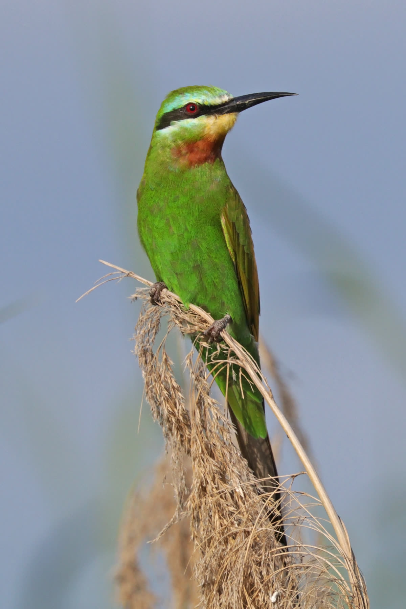

CABS و MECSHAP لحماية طيور الخريف في لبنان… الخطيب: الصياد المستدام شريك حقيقي
حملة خريفية لحماية الطيور المهاجرة في لبنان بالتعاون بين CABS و MECSHAP.
حملة خريفية لحماية الطيور المهاجرة في لبنان بالتعاون بين CABS و MECSHAP.

اختتام معرض سهيل 2026 في الدوحة بحضور تجاوز 80 ألف زائر ومشاركة واسعة.

قطر | أكثر من 80 ألف زائر في ختام معرض سهيل 2026.

إطلاق موسم الصيد السادس في السعودية بضوابط تعزز الصيد المستدام.

بالفيديو… مقناص سعود عبد العزيز البابطين في أفغانستان.
كيف يحمي العالم الطيور وينظّم الصيد مع هجرة الخريف.
تحرك ميداني لحماية ممرات الطيور فوق لبنان مع بدء هجرة الخريف.

أثبتت تجربة منع الصيد في لبنان خلال السنوات الفائتة عدم جدواها، إذ لم توقف الانتهاكات، بل حوّلتها إلى أنماط أكثر خطورة. فقد ظهرت شريحة واسعة من القوّاصين الذين يستخدمون بنادق رخيص…

في محيط بحيرة الحولة في فلسطين المحتلة يقوم الإسرائيليين بإطعام طيور الكرك أطنانًا من الذرة بواسطة الجرارات الزراعية. ثم يستقطبون السياح من جميع أنحاء العالم لمشاهدة هذه الطيور ال…

بسبب تدهور هواية الصيد وتضرر الصيادين نتيجة الصيد الجائر الذي يمارسه القواصون ،وتدهور حالة الطيور في لبنان، قامت جمعية حماية الطبيعة في لبنان SPNL بالتعاون والشراكة مع مركز الشرق…

يعتبر المعرض الدولي للصيد والفروسية في أبو ظبي أهم معرض في الشرق الأوسط على الاطلاق، ومن أهم المعارض العالمية التي تستقطب جمهورا كبيرا من هواة الصيد والفروسية وهواة التخييم ورياضا…

، الإسم : وروار أزرق الخد،المعروف علميا بإسم Merops persicus الوصف : طائر ذو لون أخضرلامع وأزرق على الخدين اما الرقبة فهي محمرة، يتغذى حصريا على الحشرات بعد التقاطها بطريقة فنيّة…
حين تسمعه تدخل معه الى عشقه المفرط للصيد وحب الطبيعة والحيوانات، فهو الذي عاش وسط البريّة في كل ظروفها المناخية وعرف الكثير عنها. علّم أبنه أحمد ( 20 عاما ) وأبنته ريم ( 18 عاما )…
إعداد هاني الأحمد
أغرمت دونا قزي بالخيول وهي في عمر ال 4 سنوات حين إفتتح نادي Riders مركزه قرب منزلها في منطقة نهر الكلب، وأصبحت مسحورة بهذا العالم تنظر الى الخيول كل يوم من نافذتها بدهشة وعشق، وتت…
لا شك ان الكلب المتفوق في الصيد يزيد في رصيد صاحبة ويجعله يشعر بمتعة الإنتصار على الجميع، ويعطيه مكانة ومنبرا ليقدم النصيحة لزملائه عن كيفيه التدريب ويجعله يتبجح بصفات كلبه و" يحر…
تحت مظلة النسخة السابعة من مهرجان سمو الشيخ منصور بن زايد آل نهيان،وبمشاركة 50 فارسة من البحرين ودول مجلس التعاون وبعض الدول العربية وأوروبا وأميركا، فازت الفارسة البحرينية منال م…
[caption id="attachment_1742" align="alignnone" width="600"] أمين سر الجمعية د. رعد محمد وفر السعدون[/caption] أعدت المقابلة جوسلين بو راشد [divide] تعتبر جمعية الصيادين العراقية…
الصياد الماهر cazador experto بندقية الصيد rifle de caza خرطوش الصيد Cartuchos de caza رحلة الصيد viaje de caza جعبة الصيد chaleco de caza لباس الصيد ropa de caza كلب الصيد perro…
يتمتع الصيادون برحلاتهم في الصحاري والجبال بقيادة سيارات الدفع الرباعية، التي تشعرهم بمتعة تذليل الصعوبة والمسير قدما رغم وعورة الطرقات وقساوتها، وايضا في كل الظروف المناخية الصعب…
سلامة الصياد وحياته هي الاساس لذا عليك الانتباه لكل خطوة تقوم بها وانت برفقة سلاحك الناري.حوادث الصيد تحصل بسبب: - تقدير خاطئ للصياد وعدم التمييز بين شخص وطريدة. - عدم التمّكن من…
الحصان حيوان قوي، وحتى أفضل الخيل تدريباً فإنها قد تجفل وتجمح لدى سماع أي صوت مفاجئ أو مشاهدة اي حركة مباغتة، ولهذا على اي فارس او هاو للفروسية ان يلتزم بهذه الخطوات الضرورية جدا…
صحة صقرك تحتاج الى عناية دائمة ليكون صيادا ماهرا ويجعلك امام اصدقائك الصيادين تزهو وتتمتع وتشعر بالتفوق ، وبما ان المعرفة هي الضمانة الأولى للوقاية ، اليك عرض بعض انواع امراض الصق…
ان تقول «حبارى » يعني انك تشير بصورة غير مباشرة الى عالم الصيد بالصقر، هذا التراث المعروف والمحبب في بلاد الخليج خاصة. فهذا الطائر هو من ابرز الطيور البرية التي ارتبط اسمها بهذا ا…
مجلة " صيد " تقدم لقرائها ومتابعيها : نموذج طلب امتحان الصيد - نموذج طلب رخصة الصيد بري - نموذج رخصة صيد الطيور - نموذج رخصة صيد الحيوانات الموبرة . هذه الطلبات والرخص اقرتها وزار…
المطوق : يتواجد في الأماكن شبه الصحراوية والاراضي العارية والجافة والمناطق المزوعة كسهل البقاع وسهول الجنوب يعشعش بين آذار وآب ويكثر أثناء العبور في تشرين الثاني قادما من الشمال ا…
بتنظيم من المجلس العالمي لحماية الطيور ومشروع حماية الطيور المهاجرة، وبرعاية وزير البيئة اللبناني ناظم الخوري وبالتعاون مع جمعية حماية الطبيعة في لبنان SPNL الشريك الوطني للمجلس و…
تتحضر اندية الرماية في لبنان لوضع اللمسات الأخيرة خلال ايام على التجهيزات العملية لإجراء امتحانات الصيد للراغبين في الحصول على رخصة صيد بري في لبنان. وهذه التحضيرات تعتبر اولى الع…
انها اكثر من وجه نسائي ينتمي الى سلالة اردنية حاكمة.. هي نبض لا يهدأ، وثقافة مليئة بالتواضع، وحركة لا تعرف الرضوخ الى التعب.. تنتمي إلى جمال الطبيعة، تعيشه، تلامسه بضوئها لتحميه م…
ينص قانون نظام الصيد البري في لبنان رقم 580 الصادر في 25-2-2004 على انه " فيما خلا الطرائد، تعتبر جميع الطيور والحيوانات البرية المقيمة والمهاجرة محمية على مدار السنة ويحظرصيدها "…
صدر قرار عن مديرية شرطة البيئة في اقليم كوردستان بمنع صيد الاسماك من 15 نيسان وحتى اواخر شهر أيار بسبب وضع الاسماك لبيوضها في هذه الفترة، ومن الجدير بالذكر ان المحافظة على الحياة…